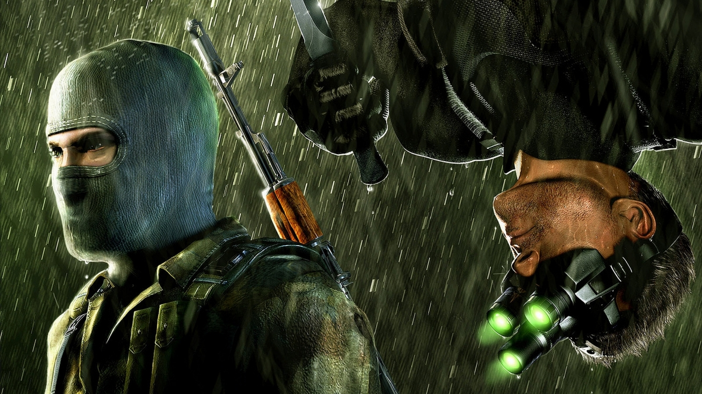
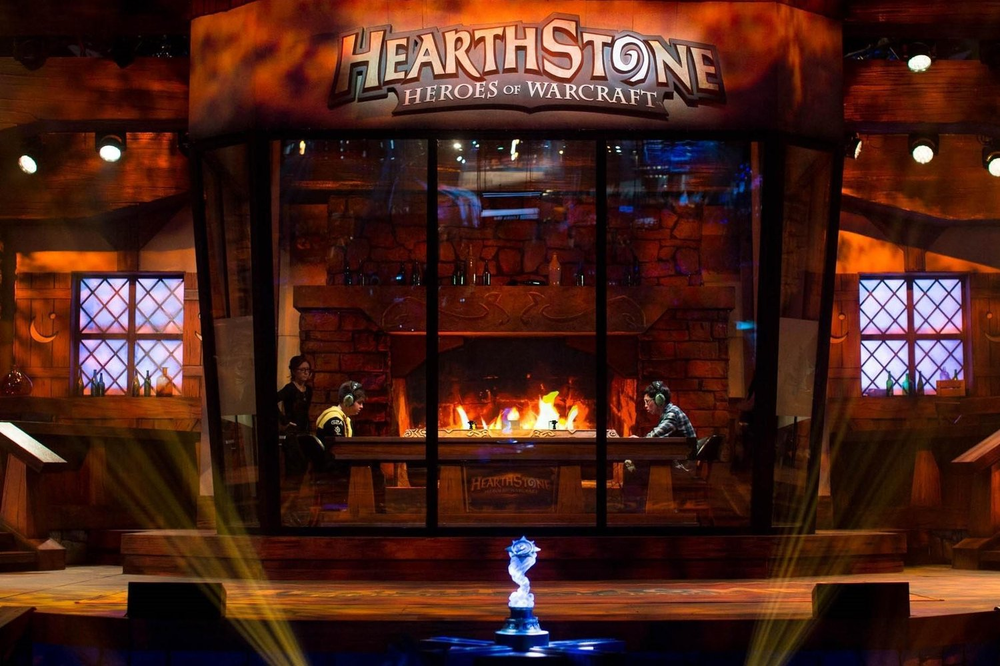

I'm a real deal. Trust me, if I say I can do stuff I do it at the very last moment. This technique is very dangerous, but worthwhile.
I like a lot (A LOT) of games and was a unofficial editor/newsmaker for ukrainian game journal Gameplay (out of bussiness since 2010). I was posting news on their website.
Eventually I entered lawyer high school and after that I managed to get a free tuition for the best lawyer university in Ukraine. During that time I started to learn programming and 3DS Max.
After graduating I was working as the one and only (literally) product manager in office at MysteryTag in Kiev where I learned and gained valuable lessons and experience.
In the end, I've succesfully entered George Brown College for program T163 (Game programming) to fulfill my long desired dream of becoming a game developer. Also, I made couple of games during my free time. I've listed them down below.

Since Valve was silent for a long time someone should stepped in. That someone was me. I made the infamous game a reality and everyone liked it.
The game featured Gordon Freeman, Alex Vince, more ridiculous gnome achievement, guns and enemies to shoot at. Game breaking features were RPG system, upgradable car/guns and space levels.
Why do I even care explaining it? There are 2 types of man. Those, who played it, and those who lied, that didn't play it. Everyone know this game and everyone like it. End of story.
Supa gaem off all taem! infinite outta 10 - IGN
I can't believe I'm still alive to play it - TheManWithCancer

Same story as with the previous installment. Shareholders were greedy so I stepped in and made another masterpiece. All it took me was a personal life and mental health.
Features the one and only Sam Prokopets Fisher as the main protagonist, stealth and new kill animations yay! Oh yeah, Grimm is now villian as well as Fisher's daughter, so he struggles to kill them both thus player is forced to face a moral decisions and hard choices.
Sequel we all deserve (no) - StopGame

Since my last project brought me fame and wealth I became as greedy as shareholders. So, I went to the Mount Kilimanjaro to creat a new game. It took me 10 days to get there and back + 5 days to make a game.
Features a lot of cards with rareties, sounds, good looks and
After ADPocalypse and this game I'm homeless now - NaziPie